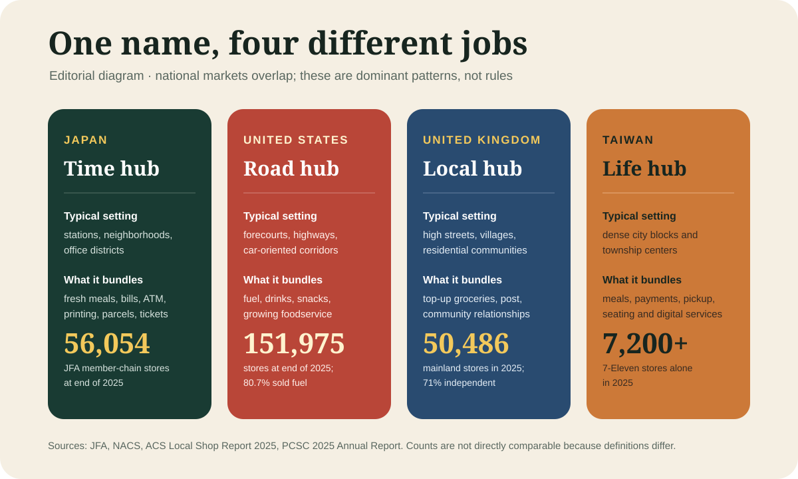

Japan with
Japan withAt 11:38 p.m., the room is doing several jobs at once. A student waits for fried chicken. A traveler studies an ATM screen. Someone pays an electricity bill at the register while a delivery driver scans parcels beside a machine printing concert tickets. Nobody calls this remarkable. The sign outside says konbini—the Japanese shortening of “convenience store”—and the extraordinary thing is how ordinary all of it feels.
Visitors often begin with the food: triangular rice balls, egg sandwiches, seasonal sweets and hot snacks by the till. The food deserves attention. But it is not the deepest difference between a Japanese konbini and the corner shop, petrol station or minimart you know elsewhere. The real product is a small, dependable block of time. One stop replaces several errands.
First, what counts as a konbini?
A supermarket is built for a basket. A konbini is built for a mission. Its footprint is smaller, the selection narrower, prices often a little higher and turnover faster. The shelves are edited around what someone might need now: breakfast before a train, a charger after a cable breaks, dinner after overtime, an umbrella when the forecast loses.
Japan’s seven major chains ended 2025 with 56,054 stores, according to the Japan Franchise Association. That number covers member chains, not every independent shop, and international counts use different definitions. It still explains the feeling of density. In cities, konbini sit inside stations, below offices, beside hospitals and among apartment blocks. In rural areas, a single store may be far more consequential because banks, grocers and public counters have retreated.
Food is the front door, not the whole building
The meal case is engineered around short cycles. Rice dries, seaweed softens and chilled noodles lose texture, so chains use sales data, weather forecasts, neighborhood patterns and frequent deliveries to decide what each store should receive. Products are often designed for the channel rather than simply miniaturized supermarket goods. Packaging keeps seaweed away from rice until an onigiri is opened; microwave instructions are standardized; seasonal limited editions create reasons to return.
This is why a Japanese store can feel closer to a compact cafeteria than an emergency pantry. Yet quality is not magic and “konbini food” is not one category. A rice ball can be a useful breakfast, while a day of fried snacks, sweet drinks and heavily salted noodles is still a day of fried snacks, sugar and salt. Allergy information is commonly printed in Japanese, and formulas vary. Travelers with serious restrictions should use a translation tool, ask staff when possible and never infer safety from familiar-looking packaging.

The counter is a portal to other systems
Walk past the refrigerator and the comparison with an overseas snack shop starts to break down. Depending on chain and branch, customers can withdraw cash, pay utilities and taxes, send or collect parcels, buy event tickets, print documents from a phone, make photocopies, purchase insurance for a trip or vehicle, and collect online orders. FamilyMart’s visitor information, for example, advertises overseas-compatible ATMs, contactless payment and multilingual copy-and-print screens. Its delivery service accepts Yamato parcels, with exceptions by location.
These are not decorative extras. Seven & i says its stores began accepting round-the-clock utility payments in 1987, independent of bank opening hours. The service desk turned retail density into administrative access. Every function has limits—some ATMs reject some cards, maintenance windows exist, fees vary, and station kiosks may omit services—but the shared counter saves a second journey often enough to become a habit.
Same English name, different national job
“Convenience store” sounds like one format traveling around the world. In practice, transport, planning, ownership and payment systems give the store a different center of gravity in each market.

United States: the road is often the anchor
NACS counted 151,975 U.S. convenience stores at the end of 2025; 122,620 of them—80.7 percent—sold motor fuel. That does not make American stores mere petrol-station snack racks. Foodservice supplied 28.5 percent of in-store sales in 2025, and chains increasingly compete on prepared food and coffee. But the car trip and the forecourt remain structural. In Japan, where dense rail and walking networks deliver customers, the neighborhood or station often anchors the transaction instead.
United Kingdom: the local shop is often social infrastructure
The UK’s Association of Convenience Stores counted 50,486 mainland shops in 2025, with 71 percent run by independent retailers. The report emphasizes top-up grocery shopping, local employment and community relationships: 32 percent of customers said they knew the people running or working in their local shop well or quite well. Some stores include post offices, parcel services or forecourts. Compared with Japan’s highly standardized national chains, ownership is more fragmented and the identity of the proprietor more visible.
Taiwan: the closest comparison corrects the myth
Taiwan shows why “only in Japan” is usually the wrong conclusion. President Chain Store Corporation reported more than 7,200 7-Eleven branches in 2025, reaching all 368 townships and cities; that is one chain, not the whole market. Taiwanese stores also integrate meals, payments, parcel pickup, digital services and often seating. The comparison reveals a broader East Asian urban model rather than a uniquely Japanese national personality. Japan’s version is distinctive in execution, product rhythms and institutional links—not because other societies failed to discover convenience.
A shop can become emergency infrastructure
Convenience becomes most visible when ordinary infrastructure fails. Seven & i and Seven-Eleven Japan were designated public institutions under Japan’s Disaster Countermeasures Basic Act in 2017. The group uses stores and logistics networks to distribute essentials, and participating branches register as disaster-support stations that can offer tap water, toilets and road information where possible. After the 2024 Noto Peninsula earthquake, the group documented deliveries of water, bread and noodles to affected areas.
This does not mean every store will remain open in every disaster, or that a toilet is a public facility on an ordinary day. Safety, staff and supply routes come first. It does show why policymakers and companies describe konbini as “social infrastructure”: the same dense network that delivers lunch can move information and necessities in an emergency.
The convenience bill is paid somewhere
The smooth surface hides difficult labor. Most big-chain stores are franchises. Someone must receive deliveries, clean, cook, manage waste, prevent theft and operate an expanding catalog of services at all hours. A 2020 Ministry of Economy, Trade and Industry survey arrived amid conflict over 24-hour opening and the relationship between headquarters and franchisees. Since then, chains have allowed more reduced-hour experiments, but staffing pressure has not vanished. A promise of constant availability can become an overnight burden for the owner and workers who make it real.
Freshness also creates waste. Forecasting and discounts reduce unsold food, while chains are changing packaging and recycling practices, yet a full late-night shelf still implies a buffer. Refrigeration, lighting, repeated deliveries and single-use packaging have environmental costs. The industry’s newest efficiencies—AI ordering, self-checkout and energy controls—can reduce some pressure, but they do not make convenience free.
There is a social trade-off too. A chain store can preserve access when a village loses other services; it can also pull spending from independent grocers. In dense cities, its predictability is reassuring. In a neighborhood where every shelf plan arrives from headquarters, the same predictability can flatten local difference. Both statements can be true.
How to use a konbini without treating it as a theme park
If you want a meal, start with a rice ball, sandwich, salad or bento and add something rather than building dinner entirely from viral recommendations. If you need cash, look for the card-network logos on the ATM before inserting a card. Keep a backup card and cash; overseas-card acceptance and fees can differ. If you need a toilet, ask rather than assuming. If you need to print a ticket, leave time for the interface and any required counter step.
Then watch the room for a minute. The point is not that Japan perfected a superior shop. It is that a particular combination of density, logistics, franchise standardization and institutional partnerships made one small room responsible for an unusually large portion of daily life.
The konbini does not eliminate effort. It hides and coordinates effort so that the customer can borrow ten minutes back.
Sources and limits
- Japan Franchise Association — convenience-store statistics, 2025 annual series
- METI — survey of convenience-store headquarters and franchisees (2020)
- Seven & i — services as social infrastructure
- Seven & i — disaster and business-continuity initiatives
- FamilyMart — services for visitors to Japan
- NACS — 2026 U.S. store and fuel statistics
- Association of Convenience Stores — UK Local Shop Report 2025
- PCSC — 2025 Annual Report
National store counts are not league tables: associations define stores, territories and reporting members differently. Services vary by chain and branch. Company pages describe their own programs; they are used for verifiable service details, not as independent judgments of quality. No brand paid for inclusion.

See everyday Japan between the landmarks.
Watch LIVE Japan with Yuji, then learn Japanese while playing DraMap.